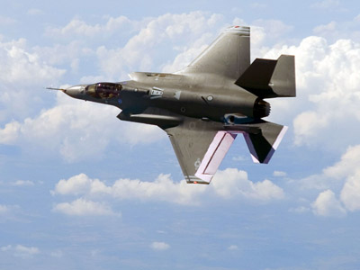

Backhoe - is a piece of excavating equipment or digger consisting of a digging bucket on the end of a two-part articulated arm. They are typically mounted on the back of a tractor or front loader.
">Burj Khalifa - known as Burj Dubai before its inauguration, is a skyscraper in Dubai, United Arab Emirates. It is the tallest man-made structure in the world, standing at 829.8 m.
">Crane - is a type of machine, generally equipped with a hoist, wire ropes or chains, and sheaves, that can be used both to lift and lower materials and to move them horizontally.
">The Golden Gate Bridge - is a suspension bridge spanning the Golden Gate strait, the mile-wide, three-mile-long channel between San Francisco Bay and the Pacific Ocean.
">Operating Room - a room in a hospital specially equipped for surgical operations.">
Pacemaker - is a small device that's placed in the chest or abdomen to help control abnormal heart rhythms. This device uses low-energy electrical pulses to prompt the heart to beat at a normal rate.
"></b> - also known as a retinal scan display (RSD) or retinal projector (RP), is a display technology that draws a raster display (like a television) directly onto the retina of the eye. The user sees what appears to be a conventional display floating in space in front of them.</p></justify>")
Corner Shot - is a new weapon system designed for urban combat which enables the user to observe and engage a target from behind a corner without exposing any body parts. >
">Unmanned Aerial Vehicles (UAVS) aka Drones - are aircraft either controlled by 'pilots' from the ground or increasingly, autonomously following a pre-programmed mission. While there are dozens of different types of drones, they basically fall into two categories: those that are used for reconnaissance and surveillance purposes and those that are armed with missiles and bombs.
">Exosuit - is a mobile machine consisting primarily of an outer framework worn by a person, and powered by a system of motors or hydraulics that delivers at least part of the energy for limb movement.
"> Lockheed Martin F-35 Lightning II - is a family of single-seat, single-engine, all weather stealth multirole fighters undergoing testing and final development. This fifth generation combat aircraft is designed to perform ground attack, aerial reconnaissance, and air defense missions.
">. It was developed by Google with the mission of producing a mass-market ubiquitous computer. Google Glass displays information in a smartphone-like hands-free format.") Tablet Computer - is a mobile computer with a touchscreen display, circuitry and battery in a single unit. Tablets come equipped with sensors, including cameras, a microphone and an accelerometer, and the touchscreen display uses finger or stylus gestures substituting for the use of computer mouse and keyboard. ">
(smart phone) - is a mobile phone with an advanced operating system. Smartphones typically include the features of a phone with those of other popular mobile devices, such as personal digital assistant, media player and GPS navigation unit.">
Smartwatch (smart watch) - is a computerized wristwatch with functionality that is enhanced beyond timekeeping. While early models can perform basic tasks, such as calculations, translations, and game-playing, modern smartwatches are effectively wearable computers.">
Tablet Computer - is a mobile computer with a touchscreen display, circuitry and battery in a single unit. Tablets come equipped with sensors, including cameras, a microphone and an accelerometer, and the touchscreen display uses finger or stylus gestures substituting for the use of computer mouse and keyboard. ">
(smart phone) - is a mobile phone with an advanced operating system. Smartphones typically include the features of a phone with those of other popular mobile devices, such as personal digital assistant, media player and GPS navigation unit.">
Smartwatch (smart watch) - is a computerized wristwatch with functionality that is enhanced beyond timekeeping. While early models can perform basic tasks, such as calculations, translations, and game-playing, modern smartwatches are effectively wearable computers.">
TechNews is your online source of the latest news in technology.
From communication to military technology articles.
 Facebook
Facebook Twitter
Twitter Gmail
Gmail RSS
RSS